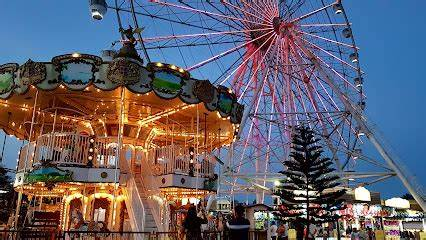

THINGS TO TRY IN TAGAYTAY
● Visit Skyranch
Sky Ranch Tagaytay is a leisure park located in Tagaytay City. Travelers visit the park to enjoy Tagaytay’s cool temperature and beautiful views. Sky Ranch Tagaytay is home to dozens of rides and attractions, including the Sky Eye, a Ferris wheel with 32 air-conditioned gondolas that can fit up to 4 people. The highest point of the ride is 63 meters above the ground, making it one of the tallest Ferris wheels in the Philippines. Adrenaline junkies can also try other rides, including the Drop Tower, the Log Coaster, and the Safari Splash. The family-friendly park also has tamer rides for children, including the Red Baron, the Boat Parade, and the Fastrak Convoy. The park is also home to several restaurants and snack and drink kiosks, so you won’t go hungry if you decide to spend the whole day here.